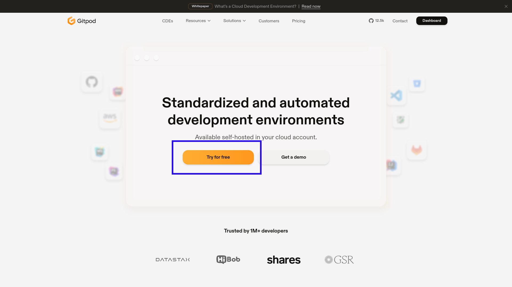
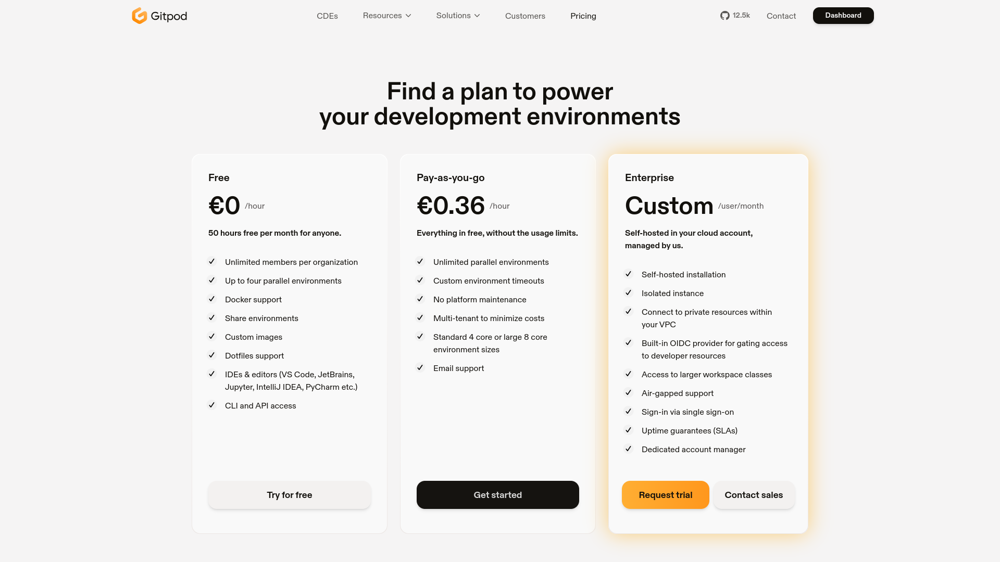
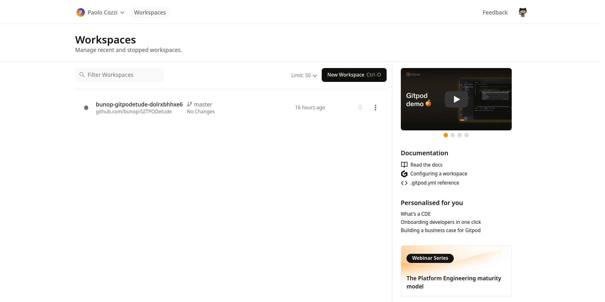
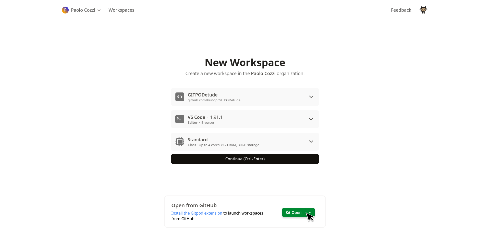
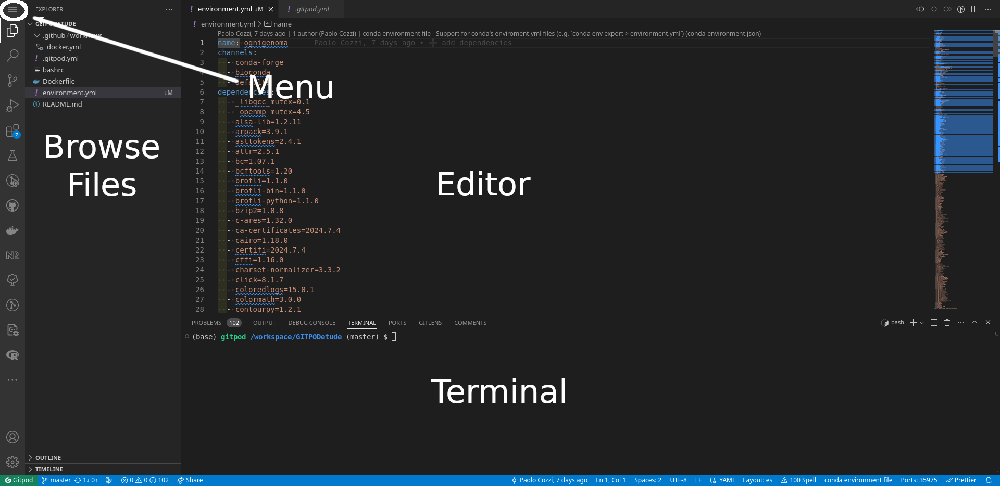
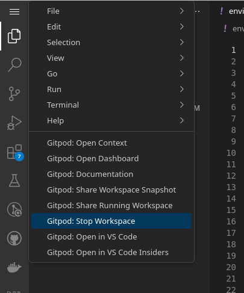
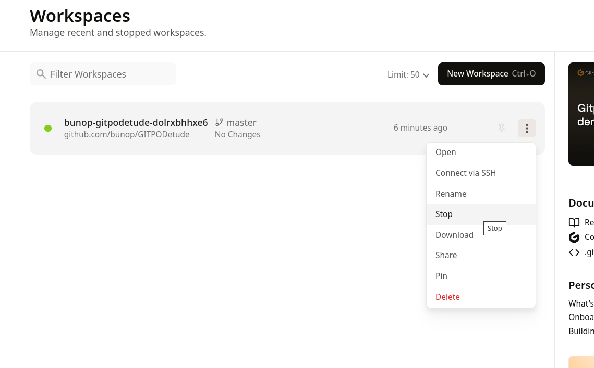

Handling different data types, quality checking and preparing data files
Practical introduction
To follow this and other practicals, a working *NIX environment is required. We suggest to use a Linux distribution, MacOS or Windows with WSL2.
If you don’t have a working environment, you can use GitPod, a cloud-based IDE that allows you to work on your projects from anywhere. We suggest:
Introduction to GitPod
Go to https://www.gitpod.io/ and select the Try for free button
Link your GitHub account to GitPod (recommended)
Add your linkedin account to get 50 hours of free usage per month

GitPod pricing plans
See your resource usage at https://gitpod.io/billing
GitPod Workspaces
Create a workspace
Click here to create a new workspace for this project!
VS Code in GitPod
Take a look at VS Code tutorial, for example this one
Turning off Workspaces
 
GitPod CLI
You can install the GitPod CLI to manage your workspaces from the terminal
Workspaces lifecycle
- Workspaces are automatically stopped after 30 minutes of inactivity or after 8 hours (using a free plan)
- Only files and directories inside
/workspacedirectory are preserved.
- Only files and directories inside
- Workspaces are deleted after 14 days
- remember to save your work
- Please see Workspace Lifecycle for more information
Using the Command Line
For scientific computing, a command-line interface (CLI) is often essential. This means typing out commands instead of using a graphical user interface (GUI).
- Numerous tools are exclusively available as command-line utilities.
- Once familiar, the CLI can be faster and more precise.
- Tasks can be easily automated through scripting.
- High-performance computing (HPC) environments often rely solely on CLI access.
Filesystem Hierarchy
The filesystem is organized in a tree-like structure, with the root directory / at the top.
/is the root directory./homecontains user directories./usrcontains user programs./bincontains essential binaries./etccontains system configuration files./varcontains variable data./tmpcontains temporary files./workspacespecific to GitPod.

Absolute vs. Relative Paths
- Absolute paths start from the root directory
/.- e.g.,
/,/home/user/file.txt,/home/user/data/.
- e.g.,
- Relative paths start from the current directory.
- e.g.,
file.txt,user/data/file.txt. .refers to the current directory (e.g.,./file.txt)..refers to the parent directory (e.g.,../file.txt). Can be chained multiple times (e.g.,../../file.txt)
- e.g.,
Navigate the Filesystem
Here are some basic commands to navigate the filesystem: each command can accept a path and additional option(s) as an argument. The general rule is:
command [option(s)] [path]
pwd: Print current working directory (absolute path).ls: List files and directories.cd: Change directory.mkdir: Make directory.rmdir: Remove directory (safer).touch: Create an empty file - set the timestamp of a file to the current time.rm: Remove files.mv: Move or rename files.cp: Copy files.
ls useful options
ls shows files and directories in the current directory. You can provide a path to list files in a different directory. Here are some useful options:
ls -l: List files with details.ls -a: List all files, including hidden ones.ls -lh: List files with human-readable sizes.ls -t: List files sorted by modification time.ls -S: List files sorted by size.ls -R: List files recursively.ls -r: List sorted files in reverse order.ls -1: List files in a single column.
You can combine options, e.g., ls -lhSr /home/user/data to list files in /home/user/data folder with human-readable sizes ordered by size in ascending order (bigger files on bottom).
Useful options for other commands
- Without a path:
cd: (without any arguments) change to your home directorycd -: change to the previous directory
- With a path (relative or absolute)
mkdir -p: create a directory with its parents if they do not existrm -r: remove directories and their contents recursively (use with caution)rm -i: prompt before removing filesmv -i: prompt before overwriting filescp -r: copy directories and their contents recursivelycp -i: prompt before overwriting files
Can you guess the difference between rm -r and rmdir?
Navigate the Filesystem (exercise)
- Open a terminal (if not yet open)
- Print the current working directory
- List the files and directories
- Change to your home directory
- Create a new directory called
mydir - Change to the
mydirdirectory - Create a new file called
myfile.txt - List the files and directories
- Move
myfile.txtto the home directory - Remove the
mydirdirectory - List the files and directories
Wildcards
Wildcards are characters that help match file names based on patterns. Ex:
*: Matches any number of characters (file*matchesfile1,file2,fileverylongetc.)?: Matches a single character (file?matchesfile1,file2, but notfileverylong)[ ]: Matches any character within the brackets (file[12]matchesfile1,file2, but notfile3orfileverylong.file[1-9]to match file with any digit){ }: Matches any of the comma-separated word (file{1,2,verylong}matchesfile1,file2andfileverylong)
Special characters
Some characters have special meanings in the shell:
~: expands to the home directory (cd ~,cd ~/data)$: refers to an environment variable (echo $HOME,echo $PWD);: separates commands in one line (execute commands with this order e.g.cd /tmp; lsfirst change to/tmpthen list files)\: escapes the next character (ls file\ with\ spaces.txt)': preserves the literal value of all characters enclosed (echo 'Today is $(date)'will printToday is $(date))": preserves the literal value of all characters enclosed, but allow for variable expansion, command substitution, and escape sequences (echo "Today is $(date)"will printToday is <current date>)#: comments the rest of the line (# this is a comment). Not executed.
File Permissions
Each file has three types of permissions: read, write, and execute. These permissions are set for three types of users: owner, group, and others.
r: read permissionw: write permissionx: execute permission-: no permission
You can inspect permissions using ls -l, near the file name. For example, rwxr-xr-- means:
- Owner has read, write, and execute permissions.
- Group has read and execute permissions.
- Others have only read permission.
Change File Permissions (UGO)
You can change file permissions using chmod command. The general syntax is:
chmod [options] mode file
where mode can be:
u: user (owner)g: groupo: othersa: all (u, g, o)+: add permission-: remove permission=: set permission
For example, to give execute permission to the owner of a file:
chmod u+x file
Stdin, Stdout, Stderr
Every process in Unix has three standard streams:
- Standard Input (stdin): Input from the keyboard or another process.
- Standard Output (stdout): Output to the terminal or another process.
- Standard Error (stderr): Error messages to the terminal or another process.
By default, stdin is the keyboard, and stdout and stderr are the terminal. You can redirect these streams:
>: Redirect stdout to a file (ls > files.txt)>>: Append stdout to a file (ls >> files.txt)2>: Redirect stderr to a file (ls non_existent_file 2> errors.txt)&>: Redirect both stdout and stderr to a file (ls non_existent_file &> output.txt). Its equivalent to> output.txt 2>&1<: Redirect stdin from a file (wc -l < files.txt)
Pipes
Pipes (|) connect the stdout of one command to the stdin of another. For example:
ls -l | wc -l
This command lists files in the current directory and counts the number of lines in the output.
You can chain multiple commands using pipes:
ls -l | grep myfile | wc -l
This command lists files in the current directory, filters lines containing myfile, and counts the number of lines.
Environment Variables
Environment variables are key-value pairs that store information about the environment. Some common environment variables:
HOME: Home directoryPATH: List of directories to search for executable filesPWD: Present working directoryOLDPWD: Previous working directoryUSER: Current userSHELL: Current shell
You can access environment variables using $, for example echo $HOME prints the home directory (to stdout).
You can use environment variables in scripts or commands, for example: cd $HOME or cp $OLDPWD/file.txt .
Aliases
Aliases are shortcuts for commands. You can define aliases in the shell configuration file (e.g. ~/.bashrc). For example:
This command creates an alias ll for ls -l. You can use ll instead of ls -l.
Access file content
You can access the content of a file using cat, less, more, or head and tail commands.
cat: Concatenate and display file contentless: Display file content page by pagemore: Display file content page by pagehead: Display the first lines of a filetail: Display the last lines of a file
For example, to display the first 10 lines of a file:
head file.txt
Search file content
You can search for text in files using grep command. The general syntax is:
grep [options] pattern file
where pattern is the text to search for. For example:
grep 'pattern' file.txt
This command searches for pattern in file.txt and prints matching lines.
You can use regular expressions in grep to search for more complex patterns. For example:
grep -E 'pattern1|pattern2' file.txt
This command searches for pattern1 or pattern2 in file.txt.
Find files
You can find files in the filesystem using find command. The general syntax is:
find [path] [options]
where path is the directory to search in. For example:
find /tmp -iname '*.txt'
This command searches for files with .txt extension in /tmp directory. More options:
-name: Search by exact name-type: Search by file type (e.g.ffor file,dfor directory)-size: Search by file size (+for larger,-for smaller. e.g.+1M)-exec: Execute a command on found files (requires{}as a placeholder and\;at the end of the command)
Utilities
There are many utilities available in Unix-like systems. Some common utilities:
awk: A powerful text processing toolsed: A stream editor for filtering and transforming textcut: Extract columns from each line of filessort: Sort lines of text filesuniq: Report or omit repeated lineswc: Print newline, word, and byte counts for each filediff: Compare files line by linefile: Determine file typedu: Estimate file space usageman: Display manual pageswhich: Locate a command
Utilities exercise
- List current directory contents using
lscommand and redirect the output tofiles.txt. - Count the number of files in the current directory using
lsandwccommands. - Find all files with
.txtextension in the current directory usingfindcommand. - Display the first 5 lines of
files.txtusingheadcommand. - Rename
files.txttoall_files.txtusingmvcommand. lsa non-existent file and redirect the error toerrors.txt.- Concatenate
all_files.txtanderrors.txtusingcatcommand and redirect the output toall_files_errors.txt. - Display manual pages for
bash(man bash). Search forCommands for Movingsection: How I can move to the beginning of the line? How I can move to the next word? - GitPod users: locate file
LSPAN24-practical1.qmd,grepfor##characters (mind#is a comment character), then order titles alphabetically usingsort
Curl vs Wget
curl and wget are command-line tools for transferring data with URLs. Some differences:
curl: Supports multiple protocols (HTTP, HTTPS, FTP, etc.), more flexible, but less user-friendly.wget: Supports HTTP and FTP, more user-friendly, but less flexible.curlis more suitable for scripting and automation.
You can use curl and wget to download files from the web. For example:
curl -O https://example.com/file.txt
This command downloads file.txt from https://example.com to the current directory.
Compression
You can compress and decompress files using gzip, bzip2, and xz commands. For example:
gzip file.txt
This command compresses file.txt to file.txt.gz. To decompress:
gunzip file.txt.gz (or gzip -d file.txt.gz)
You can use bzip2 and xz commands similarly. For example to compress:
bzip2 file.txt
xz file.txt
To decompress:
bunzip2 file.txt.bz2 (or bzip2 -d file.txt.bz2)
unxz file.txt.xz (or xz -d file.txt.xz)
Tar
You can create (-c) and extract (-x) tar archives using tar command. For example:
tar -cvf archive.tar file1 file2
This command creates archive.tar containing file1 and file2. This archive is not compressed and have the same size of the sum of file1 and file2 sizes. To extract:
tar -xvf archive.tar
You can compress and extract compressed tar archives in one step. For example:
tar -czvf archive.tar.gz file1 file2
This command creates archive.tar.gz containing file1 and file2. To extract:
tar -xzvf archive.tar.gz
Mind to the z option for gzip, j for bzip2, and J for xz. f need to be followed by the archive name.
Tar (remember)

Credits programmerhumor.io
Tar (remember /2)

Credits xkcd.com
Editors
There are many text editors available in Unix-like systems. Here some common editors available in terminal:
nano: Simple and user-friendly text editorvim: Powerful and highly configurable text editoremacs: Extensible and customizable text editor
Tip
GitPod users have access to Visual Studio Code, a powerful and highly configurable text editor.
Introduction to virtual environment
Virtual environments are isolated environments for software development. They allow you to install dependencies and packages without affecting the system-wide installation. Some common tools for creating virtual environments:
- Python: virtualenv, pyenv, poetry
- R: packrat, renv
- Perl: local::lib, perlbrew
- Ruby: rvm
Introduction to Conda
- Conda: A package manager and environment management system for installing and managing software packages and dependencies, particularly for Python and R.
Create an environment (from scratch)
We use conda command to manage environments with conda / miniconda:
- replace with
mambaif you havemambainstalled. --name: required to specify the name of the environment.- specifying versions helps the package resolver
Create an environment (from file)
We can also create an environment from a file. Note the env before the create command:
--file: specify the file containing the environment specifications--name: override the name of the environment in the file
List and activate environments
conda env list: list all environmentsconda activate <env_name>: activate an environment
Normally the prompt will change to show the active environment. Default installation have the base environment active at login
To deactivate an environment, use conda deactivate:
You can activate more than one environment at a time. The last activated environment will be active. When you deactivate an environment, the previous environment will be activated.
Channels and repositories
defaults: the default channel for conda packagesR: a channel for R packagesbioconda: a channel for bioinformatics softwareconda-forge: a community-driven collection of conda packages
# add a channel to the list of channels
conda config --add channels conda-forge
# add a channel to the list of channels
conda config --add channels biocondaTip
GitPod users: we have set up channels required for the practical with the suggested priority settings. You can see the settings in the .condarc file in your home directory. See more information on conda Managing Channels
Search for packages
Use conda search to search for packages in the configured channels. Wildcards can be used in the search:
# search for a package in the configured channels
conda search samtools
# search for a package in a specific channel
conda search --channel bioconda samtoolsTip
GitPod users: the channels are already configured for the practicals. You can search any package in the configured channels without specifying the channel.
Exercise
Search for the package samtools in the bioconda channel:
- What versions are available? What is the latest version? In which channel?
- Do the same for
r-basepackage.
Install packages
conda install: install packages in the active environment--name: specify the environment to install the package--file: specify a file with the list of packages to install
# install a package in the active environment
# base environment is read-only for GitPod users!
conda install pandas
# install a package in a specific environment
conda install --name python3.10 pandas
# install packages from a file in the active environment
# (python format)
conda install --file requirements.txtExercise
Create an environment with samtools, tabix and bcftools packages. Activate the environment and check if the packages are installed. Then install seqkit package in the same environment.
Understanding the environment (exercise)
- Ensure the environment created in the previous exercise is active. Can you find where the
samtoolsexecutable is located? - Deactivate the environment and check if the
samtoolsexecutable is available. Why is it not available? - Can you figure out how conda makes the executables available in the active environment?
Tip
- Use
whichto find the location of the executable. - Take a look to the environment variables in the active environment, for example
$PATH.
Exporting an environment
conda env export: export the environment to a file--name: specify the environment to export--file: specify the file to export the environment to--no-builds: exclude the build string from the exported file
# export the active environment to a file (using STDOUT)
conda env export > environment.yml
# export a specific environment to a specific file
conda env export --name python3.10 --file environment.ymlExercise
Export an environment to a file; then export the same environment with --no-builds option to another file. Compare the two files with diff (try diff -y for a more readable output).
Some tips
conda list: list all packages installed in the active environment- Install packages with versions:
conda install pandas=1.3.3 - Create environments by scope: don’t pull all packages in the same environment
- Limit the
conda-forgechannel usage if possible conda list --revision: list all revisions of the environmentconda install --revision 1: revert environment to a previous revisionconda env remove --name <env_name>: remove an environmentconda create --clone <env_name> --name <new_env>: clone an environmentconda clean --all: clean the cache and unused packages
Practical with conda: get genome data
Let’s collect some genome data to make an example. We will use the CLI tools made available by NCBI, datasets and dataformat, to collect ARS-UCD1.2 data from the NCBI database. Next, we will use seqkit to manipulate file headers and then we will bgzip to pack the sequence files.
Create one conda environment with
ncbi-datasets-cli,jq,seqkitandtabixpackagesGo the NCBI Datasets page and search for cow (
Bos taurus (cattle)will be suggested). You will open the new page for NCBI Taxonomy ID:9913.Click on ARS-UCD2.0 link, below the Genome section an over the Download button (don’t download the genome from this page)
Genome assembly and legacy versions
In the practical we will use the ARS-UCD1.2 (GCF_002263795.1) version of the genome, however the latest version is ARS-UCD2.0 (GCF_002263795.3):
- Go to the bottom of the page and search for the GCF_002263795.1 accession for the ARS-UCD1.2 version (will be in the refseq column) and click on it.
- In the top of the page, near the Download button we have some different ways to collect data. We don’t want to download the genome on on our laptop, so click on the datasets tab, just near the download button.
- A pop-up window will appear with the command to download the genome data. Copy the command by clicking on the Copy button.
NCBI Datasets CLI
datasets is a command-line tool that is used to query and download biological sequence data across all domains of life from NCBI databases. See the documentation for more information.
For example, retrieve the same information as before using the accession number: pipe the result to jq to format the output:
The same command can be use to download the genome data: paste the command you’ve copied from the NCBI Taxonomy page and add two additional options:
datasets download genome accession GCF_002263795.1 \
--include gff3,rna,cds,protein,genome,seq-report \
--dehydrated --filename ARS-UCD1.2.zipNote
The \ (escape character) is used to break the command in multiple lines: it is not necessary if you paste the command in one line: but if you paste the command in multiple lines it prevents the command from being executed before you finish typing it.
NCBI Datasets CLI (2)
--dehydrated: download the data in a dehydrated format: the data is downloaded in a format that can be rehydrated using thedatasetstool. This is required if you need to download a lot of data. See Download large genome data packages for more information--filename: specify the name of the file to download the data to--include: specify the data types to download: if we are not interested in all data types we can exclude some of them
Now unzip the downloaded archive in a new directory (since the archive will place stuff in the current directory):
-d: specify the directory to extract the files to
Rehydrate the data
Take a look to see the downloaded data: we have not any data! the only data we have are some metadata and the URL were files can be downloaded.
Is now time to rehydrate data:
--directory: this is the top level directory in which you have decompressed data withunzip
Now the data should be downloaded in the same directory where the metadata is located. You can check the data with ls or tree:
tree: list the directory structure in a tree-like format-p: show permissions-h: show sizes in human readable format-C: colorize the output
Deal with genome sequence
Take a minute to look at the files you have downloaded, especially the genome sequence: how many sequences are in the file? what is the format of the file?
We can use grep '>' to extract the sequence names from a fasta file and then counting the number of lines, however we can use a fasta/fastq manipulation program like seqkit, which can do this and much more:
seqkit stats: show statistics for the input file
There are a lot of sequences in the file, you can inspect the sequence names with
seqkit seq: transform sequences (extract ID, filter by length, remove gaps, reverse complement…)-n: only print names/sequence headers-i: print IDs instead of full headers
Sequence report
The sequence_report.jsonl file contains information about the sequences in the genome assembly. We can use jq to inspect the file, or we can use the dataformat command to transform this information in a table:
dataformat tsv: transform the input data in a tab-separated formatgenome-seq: the type of source data to transform--inputfile: the input file to transform--fields: specify the fields to include in the output
Extract chromosomes from genome
Suppose we need to get rid of un-assembled sequences from the genome: we can use seqkit to extract sequences by name. First, extract the sequences we want by ids:
jq -c 'select(.role == "assembled-molecule")' sequence_report.jsonl \
| dataformat tsv genome-seq --fields refseq-seq-acc > ids.txt-c: compact output (required bydataformatas input)select(.role == "assembled-molecule"): select only sequences that are assembled molecules by their rolerefseq-seq-acc: the field to extract from the input data
Now we can use seqkit to extract the sequences by ids:
Exercise
- Can you create the sequence ids file using
awk,cutorgrepinstead ofjq?
Rename sequences
Now the sequence names are the RefSeq accession numbers: Let’s rename the sequences to include the chromosome name as id: this could be done again with seqkit, with a text file with the old name as key and the new name as value:
jq -c 'select(.role == "assembled-molecule")' sequence_report.jsonl \
| dataformat tsv genome-seq --fields refseq-seq-acc,chr-name > alias.txtThis is the same command we use before, but now we are extracting also the chromosome number. Now we can use seqkit to rename the sequences:
seqkit replace -p '^(\S+)(.+?)$' -r '{kv} \$1\${2}' -k alias.txt \
-o ARS-UCD1.2_chromosomes_renamed.fna ARS-UCD1.2_chromosomes.fnaseqkit replace: replace patterns in sequences-p: the pattern to search for-r: the replacement pattern-k: the key-value file with the replacements-o: the output file
Compress the genome sequence
The last operation can be to compress the genome sequence file: we can do this with bgzip in order to have a compressed file that can be indexed with other software like samtools:
Check that sequence names are in the proper format
seqkit stats ARS-UCD1.2_chromosomes_renamed.fna.gz
seqkit seq -n ARS-UCD1.2_chromosomes_renamed.fna.gzExercise
Can you optimize the previous commands to avoid creating intermediate files?
Tip
You can use pipes to connect the output of a command to the input of another command. Ideally, the original file downloaded from NCBI should not be modified (but can be compressed)
Livestock pangenomes 2024 - Practical 1 - 2024/07/22